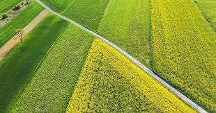
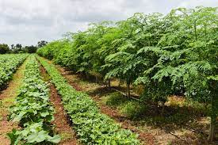

Crop Diversification
Crop diversification is the practice of growing a variety of crops in the same area. It offers numerous benefits:
- Reduces soil erosion.
- Improves soil health and fertility.
- Attracts beneficial insects and reduces pests.
Examples of Diversely Planted Fields


Test Your Knowledge!
Take the quiz below to test your knowledge about different crop combinations: